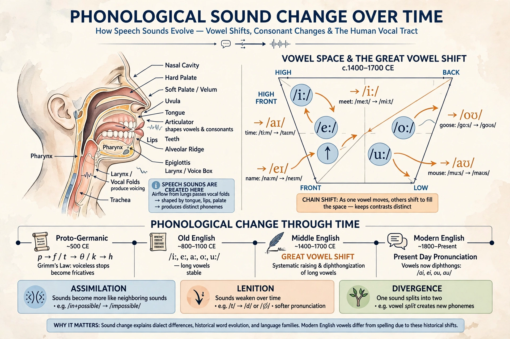

In historical linguistics, phonological change (or sound change) is any change in the pronunciation of a language over time. Sound changes can affect individual sounds, whole classes of sounds, or the entire phonological system — its inventory of phonemes, their distribution, and the rules governing them.

| Field | Historical linguistics, phonology |
|---|---|
| Famous examples | Grimm's law; Great Vowel Shift; High German consonant shift |
Linguists distinguish several mechanisms. Assimilation makes a sound more like a neighbor (as when Latin in- + possibilis yields impossibilis); dissimilation does the opposite. Lenition weakens consonants (stops becoming fricatives or disappearing), while fortition strengthens them. Vowels undergo raising, lowering, fronting, and backing, often in chain shifts where one vowel moves into the space vacated by another. Other processes include metathesis (reordering of sounds), epenthesis (insertion), syncope and apocope (loss of unstressed vowels), and mergers or splits of phonemes.
The 19th-century Neogrammarian school proposed that sound change is regular: a given change applies to all words meeting its phonetic conditions, without exception. Apparent exceptions to Grimm's law (the shift of Proto-Indo-European consonants in Germanic) were elegantly explained by Verner's law, which accounted for voicing conditioned by accent. Later work added analogy, lexical diffusion, and sociolinguistic variation as complementary mechanisms.
The Great Vowel Shift (c. 1400–1700) raised and diphthongized the long vowels of English, which is why English vowel letters diverge so much from continental values. The High German consonant shift distinguishes German from other West Germanic languages. In Romance, Latin consonant clusters and intervocalic stops lenited differently in Spanish, French, and Italian, giving scholars a map of dialect divergence.
Reconstructing sound changes through the comparative method allows linguists to reconstruct proto-languages such as Proto-Indo-European and to establish language family relationships. Written records, rhymes, loanwords, and modern dialect variation provide evidence for changes in progress and completed shifts.
See also: Historical linguistics · Sound change · Comparative method · Grimm's law